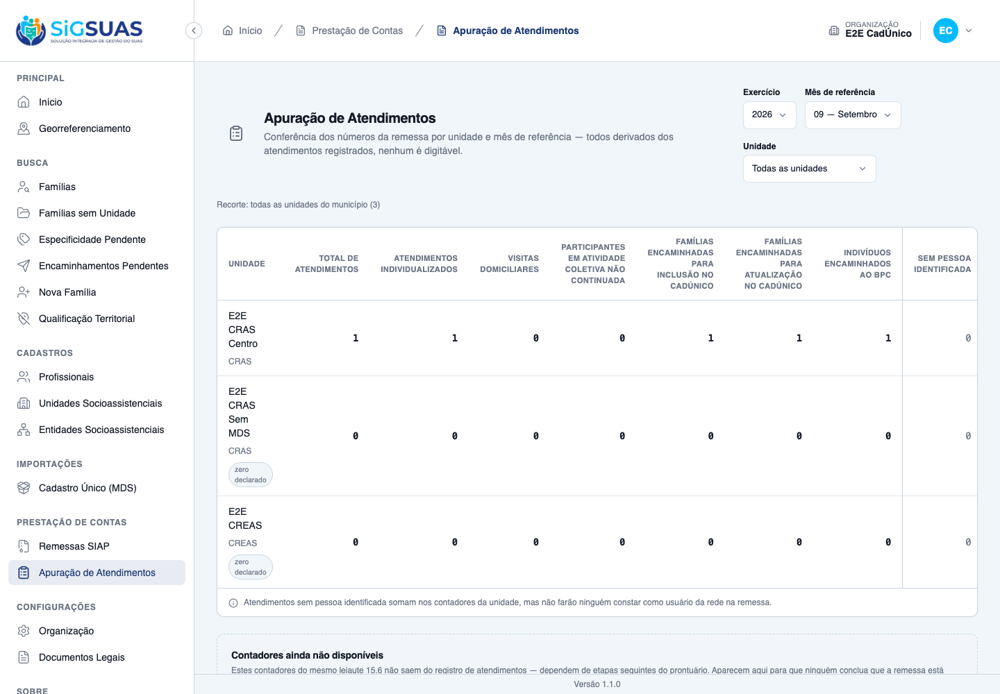
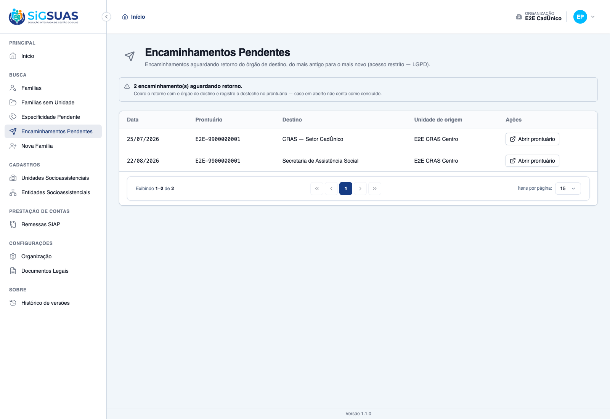
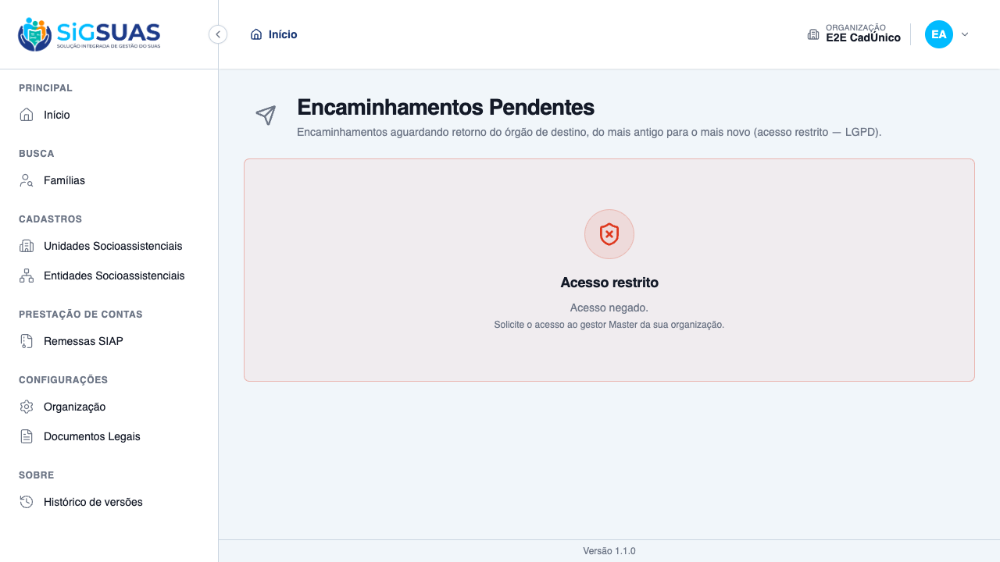

Relatório de Critérios de Aceite — Contra-referência e Desfecho
Resumo
Os 11 critérios de aceite do chamado, mais 5 derivados na spec. Os critérios estruturais da HU — anotação irretratável, ordem cronológica, desfecho, fila de pendentes e o gate de acesso restrito — foram evidenciados no navegador com dados reais. A irretratabilidade é estrutural, não apenas visual: o painel de anotações não renderiza nenhum botão, link ou input, e a ausência das rotas de edição e exclusão é travada por teste. Complemento de 04/09/2026: o critério que a geração original havia deferido — a contra-referência não alterar o contador da remessa — foi fechado na tela, porque a apuração de encaminhamentos já foi entregue pela HU #10715.
| CA | Critério | Status |
|---|---|---|
| CA01 | Registrar o retorno do órgão de destino | ATENDIDO · navegador |
| CA02 | Encaminhamento nasce aguardando retorno | ATENDIDO · automatizado |
| CA03 | Anotações em ordem cronológica | ATENDIDO · navegador |
| CA04 | Anotação não pode ser editada nem excluída | ATENDIDO · navegador |
| CA05 | Atualizar a situação do encaminhamento | ATENDIDO · navegador |
| CA05b | A mudança de desfecho fica auditada (compõe o CA05 do chamado) | ATENDIDO · automatizado |
| CA06 | Contra-referência não muda contador da remessa | ATENDIDO · navegador + automatizado |
| CA07 | Cancelado não recebe contra-referência | ATENDIDO · automatizado |
| CA07b | Cancelado também não muda de situação (derivado do CA07) | ATENDIDO · automatizado |
| CA08 | Relação de encaminhamentos aguardando retorno | ATENDIDO · navegador |
| CA08b | A relação de pendentes exige o acesso restrito (LGPD) — derivado do CA08 | ATENDIDO · navegador |
| CA08c | A negativa da relação não revela dados de outra unidade (derivado do CA08) | ATENDIDO · navegador |
| CA09 | O conteúdo da anotação fica fora da trilha | ATENDIDO · automatizado |
| CA10 | Negativa por unidade declara o motivo, sem nomear a unidade | ATENDIDO · automatizado |
| CA11 | Isolamento entre organizações | ATENDIDO · automatizado |
| CA14 | Histórico de encaminhamentos da família | ATENDIDO · automatizado |
CA01 — Registrar o retorno do órgão de destino ATENDIDO · navegador
Critério (Gherkin): Dado um encaminhamento aguardando retorno Quando eu registrar o que voltou do órgão de destino Então a anotação consta do encaminhamento, com autor e data
Como foi testado: Expandir o encaminhamento → Registrar retorno → anotação (e, opcionalmente, a situação no mesmo envio).
- O diálogo avisa ANTES de salvar: 'A anotação não pode ser editada nem excluída depois de salva. Correções se fazem registrando uma nova anotação.' — irretratabilidade anunciada, não descoberta depois.
- Salvo: toast 'Contra-referência registrada no encaminhamento.' e a anotação aparece com autor e data.
- A situação pode ser atualizada no mesmo envio.

CA02 — Encaminhamento nasce aguardando retorno ATENDIDO · automatizado
Critério (Gherkin): Dado que acabei de registrar um encaminhamento Quando eu consultar o prontuário Então ele consta com a situação aguardando retorno.
Como foi testado: Coberto pela suíte automatizada, no mesmo teste que verifica o registro assinado e datado — o estado inicial é parte do ato de registrar, não um passo separado.
- <code>✓ it registers a referral signed and dated, born awaiting_return (CA01/RN13 + CA02 da #10714)</code> — o encaminhamento nasce com a situação de aguardando retorno, sem que ninguém precise informá-la.
- Na tela, isso é visível na própria linha do histórico: a coluna <b>Desfecho</b> exibe “Aguardando retorno” assim que o encaminhamento é registrado, ao lado da situação do registro “Registrado” — os dois eixos são independentes desde o início.
- É o estado que alimenta a relação de encaminhamentos pendentes do CA08: um encaminhamento recém-criado entra nela automaticamente.
Evidência por cobertura automatizada — ver Anexo.
CA03 — Anotações em ordem cronológica ATENDIDO · navegador
Critério (Gherkin): Dado que registrei duas anotações Quando eu consultar o encaminhamento Então elas aparecem em ordem cronológica
Como foi testado: Duas anotações foram registradas em sequência e a posição de cada uma foi medida no HTML renderizado.
- A primeira anotação aparece antes da segunda (posições 20 e 136 no texto do painel) — ordem crescente, não invertida.
- Cada anotação carrega autor e data próprios.
CA04 — Anotação não pode ser editada nem excluída ATENDIDO · navegador
Critério (Gherkin): Dado uma anotação registrada Quando eu procurar como alterá-la ou removê-la Então a ação não existe
Como foi testado: Inspeção do painel de anotações no DOM renderizado, mais verificação das rotas no backend.
- <b>Zero</b> botões, links ou inputs dentro do painel de anotações — nem desabilitados.
- A tela explica o caminho correto: 'a correção se faz registrando uma nova anotação'.
- No backend não existem rotas de edição ou exclusão: as tentativas respondem 405 na coleção e 404 no endereço do item, com a linha intacta.
- A ausência é decisão de arquitetura e está protegida por teste: acrescentar a trait de auditoria ao modelo derruba 17 testes. A tabela não tem exclusão lógica, não tem campo de editor e não emite log próprio — a linha, com autor e data, É o registro.
CA05 — Atualizar a situação do encaminhamento ATENDIDO · navegador
Critério (Gherkin): Dado um encaminhamento aguardando retorno Quando eu atualizar a situação Então o desfecho passa a constar
Como foi testado: Seletor 'Situação do encaminhamento', no detalhe do encaminhamento.
- Os quatro estados são oferecidos: Aguardando retorno, Atendido, Não atendido e Encerrado sem resposta (mais 'Manter a situação atual', quando junto da anotação).
- Após a mudança, a coluna 'Desfecho' da linha passa a exibir 'Atendido'.
- Situação e status do registro são eixos ortogonais: mudar o desfecho não altera 'Registrado', e cancelar não altera o desfecho.
CA05b — A mudança de desfecho fica auditada (compõe o CA05 do chamado) ATENDIDO · automatizado
Critério (Gherkin): Dado que alterei o desfecho Quando eu consultar a trilha Então a mudança consta, com autor e data
Como foi testado: O desfecho é campo estruturado e entra na trilha; a anotação, não.
- Contraprova executada: trocar a escrita por query builder derruba o teste de auditoria.
- A transição também passou a registrar o editor do registro, para que a tela não atribua a última edição a quem editou antes.
Evidência por cobertura automatizada — ver Anexo.
CA06 — Contra-referência não muda contador da remessa ATENDIDO · navegador + automatizado
Critério (Gherkin): Dado um encaminhamento sem desfecho Quando eu consultar a apuração do período Então ele continua sendo contado
Como foi testado: Complemento de 04/09/2026, agora que a apuração conta encaminhamentos (#10715): ler o contador na tela de Apuração de Atendimentos, registrar no encaminhamento de atualização cadastral no CadÚnico uma contra-referência com a situação Não atendido, e reler o mesmo contador.
- <b>Antes</b> — no recorte 09/2026, o E2E CRAS Centro apresenta <b>Famílias encaminhadas para atualização no CadÚnico = 1</b>.
- O encaminhamento do código 07 recebe a contra-referência e passa a <code>outcome = not_attended</code>, confirmado no banco.
- <b>Depois</b> — o mesmo contador continua em <b>1</b>. A leitura é idêntica à anterior, que é exatamente o que o critério exige: o leiaute conta “famílias encaminhadas”, não “famílias atendidas”.
- O código 07 foi escolhido de propósito por ter um único encaminhamento no período — assim o contador não poderia ser sustentado por outro registro e a prova fica conclusiva.
- <code>✓ it keeps counting a referral whose outcome became not_attended</code> — a suíte trava o mesmo comportamento.
- Ao final, o desfecho foi devolvido a aguardando retorno e a anotação criada para a evidência foi removida.

CA07 — Cancelado não recebe contra-referência ATENDIDO · automatizado
Critério (Gherkin): Dado um encaminhamento cancelado Quando eu tentar registrar retorno Então a ação é recusada
Como foi testado: Defesa em duas camadas: a tela não oferece a ação num cancelado, e o backend responde 409 com código próprio.
- As cinco ações (Corrigir, Cancelar, Emitir, Registrar retorno e Desfecho) ficam ausentes no cancelado, com o motivo da inércia visível.
- O 409 tem código estável e é tratado no front — sem tratamento explícito ele falharia em silêncio, porque o utilitário de erro do projeto não notifica 422.
Evidência por cobertura automatizada — ver Anexo.
CA07b — Cancelado também não muda de situação (derivado do CA07) ATENDIDO · automatizado
Critério (Gherkin): Dado um encaminhamento cancelado Quando eu tentar alterar a situação Então a ação é recusada
Como foi testado: Mesmo desenho do CA02, com código de erro distinto.
- Teste assere que o cancelado mantém o desfecho anterior e continua cancelado — os dois eixos não se contaminam.
Evidência por cobertura automatizada — ver Anexo.
CA08 — Relação de encaminhamentos aguardando retorno ATENDIDO · navegador
Critério (Gherkin): Dado encaminhamentos sem desfecho Quando eu consultar a relação de pendentes Então vejo os casos em aberto, do mais antigo para o mais novo
Como foi testado: Menu Busca → Encaminhamentos Pendentes.
- Dois casos listados, de 25/07/2026 e 22/08/2026 — do mais antigo para o mais novo, que é a ordem útil para uma fila de cobrança.
- A tela explica a consequência: 'caso em aberto não conta como concluído'.
- O encaminhamento que recebeu desfecho sai da relação automaticamente — antes da massa de teste, a página exibia 'Todos os encaminhamentos das suas unidades já têm desfecho registrado'.
- Cada linha oferece 'Abrir prontuário', que leva à aba correta.

CA08b — A relação de pendentes exige o acesso restrito (LGPD) — derivado do CA08 ATENDIDO · navegador
Critério (Gherkin): Dado que não tenho o acesso restrito ao prontuário Quando eu abrir a relação de pendentes Então o acesso é negado
Como foi testado: Segunda sessão de navegador, autenticada como Operacional sem o add-on LGPD, acessando a mesma URL diretamente.
- A página exibe 'Acesso restrito — Acesso negado. Solicite o acesso ao gestor Master da sua organização.'
- <b>Nenhum dado de cidadão é renderizado</b>: nenhum número de prontuário, nenhum destino, nenhuma unidade.
- O gate é distinto do da apuração da HU #10715 — esta relação lista famílias e por isso exige o add-on; a apuração é anônima e não exige. Os dois gates não foram unificados, deliberadamente.

CA08c — A negativa da relação não revela dados de outra unidade (derivado do CA08) ATENDIDO · navegador
Critério (Gherkin): Dado que meu acesso é restrito Quando o acesso for negado Então a mensagem não revela informação da família ou da unidade
Como foi testado: Mesma captura do CA10.
- A mensagem orienta a solicitar acesso ao gestor Master, sem nomear família, unidade ou quantidade de registros existentes.
CA09 — O conteúdo da anotação fica fora da trilha ATENDIDO · automatizado
Critério (Gherkin): Dado que registrei uma anotação Quando eu consultar a trilha de auditoria Então o conteúdo não aparece
Como foi testado: A tabela deliberadamente não emite log próprio — acrescentar auditoria duplicaria a linha COM o texto sensível junto, que é o que a regra proíbe.
- Registrar uma anotação deixa a contagem da trilha inalterada.
- Nenhum registro de auditoria tem a anotação como sujeito.
- O dump cru de todas as linhas de auditoria não contém fragmento do texto nem a chave do campo.
Evidência por cobertura automatizada — ver Anexo.
CA10 — Negativa por unidade declara o motivo, sem nomear a unidade ATENDIDO · automatizado
Critério (Gherkin): Dado que sou Operacional lotado apenas no "CRAS Centro" E que o encaminhamento pertence a família referenciada no "CREAS" Quando eu tentar registrar contra-referência Então não é permitido E a tela informa o motivo, sem nomear a unidade que atende a família.
Como foi testado: Coberto por teste de feature dedicado, que exercita a negativa e inspeciona a mensagem devolvida. Reusa o mesmo ponto único de decisão de acesso do prontuário, já vigente desde a fase F0.
- <code>✓ it denies the counter-reference for a family of another unit, naming the reason but never the unit (CA10/RN10)</code> — o teste verifica as duas metades: que o motivo é declarado e que a unidade não é nomeada.
- Nomear a unidade seria vazamento indireto: diria a um profissional sem acesso onde a família é atendida.
- A negativa por unidade é 403 com motivo, distinta da negativa por organização, que é 404 e não confirma sequer a existência do registro (CA11).
Evidência por cobertura automatizada — ver Anexo.
CA11 — Isolamento entre organizações ATENDIDO · automatizado
Critério (Gherkin): Dado um encaminhamento de outra organização Quando eu tentar acessá-lo Então o sistema responde como se não existisse
Como foi testado: Escopo por organização em duas camadas (modelo e middleware).
- Responde 404, não 403, com corpo idêntico ao de identificador inexistente — não confirma a existência do registro.
Evidência por cobertura automatizada — ver Anexo.
CA14 — Histórico de encaminhamentos da família ATENDIDO · automatizado
Critério (Gherkin): Dado que a família tem encaminhamentos Quando eu consultar o histórico Então vejo todos, em ordem estável
Como foi testado: Esta rota não tinha dono declarado nas especificações — a HU #10713 a deferiu para esta HU, que não a declarou. Foi criada aqui, com o registro da divergência.
- Ordem fixa com desempate triplo — sem os desempates, a paginação repetiria e pularia linhas quando houvesse vários encaminhamentos no mesmo dia.
- O parâmetro de ordenação enviado pelo cliente é recusado, para que a ordem não possa ser quebrada de fora.
- A consulta não gera auditoria própria: a abertura do prontuário já é auditada.
- Cancelados continuam aparecendo, marcados.
Evidência por cobertura automatizada — ver Anexo.
Observações e ressalvas
Complemento de 04/09/2026 — apêndice completo, numeração alinhada e o deferimento fechado
Três ajustes, nenhum de implementação. O apêndice guardava apenas o trecho final da execução, embora sete critérios se apoiassem nele; a suíte foi reexecutada e o apêndice agora traz os 152 testes. A numeração seguia a especificação técnica e não a do chamado, de modo que CA02, CA07, CA10 e CA11 do chamado caíam sobre outros assuntos; as entradas foram realinhadas, as derivadas passaram a CA05b, CA07b, CA08b e CA08c indicando a que critério pertencem, e CA02 e CA10 ganharam entrada própria.Por fim, o CA06 estava registrado como deferido, sob o argumento de que asseri-lo produziria um teste tautológico contra um contador que ainda não contava. Esse contador passou a existir com a entrega da HU #10715, da mesma fase, e o critério foi então exercido de ponta a ponta na interface.
Anexo — Cobertura automatizada (Pest 4, --filter=Referral) — 152 testes, 880 asserções, todos verdes
PASS Tests\Unit\Models\ReferralCodeTest ✓ it has correct fillable, casts and defaults 0.73s ✓ it uses soft deletes, HasUuid, LogsActivity and resolves by uuid 0.08s ✓ it is a GLOBAL lookup — never tenant-scoped (RN08) 0.03s ✓ it has no global scope of is_active — history and remittance never… 0.02s ✓ it keeps the four rules as data, cast to the enums (RN03–RN06) 0.03s ✓ it accepts NULL as a legitimate remittance counter value (CA02) 0.02s ✓ it enforces unique code — even against soft-deleted rows (RN09) 0.02s ✓ it configures the activity log with ALL the audited fields (RN10/§1… 0.03s PASS Tests\Unit\Models\ReferralCounterReferenceTest ✓ it is tenant-scoped and uuid-routed (§6.1/RN11) 0.04s ✓ it is APPEND-ONLY by design: no SoftDeletes and no LogsActivity — t… 0.02s ✓ it never exposes an activity log configuration — not even an empty… 0.02s PASS Tests\Unit\Models\ReferralFormEmissionTest ✓ it is tenant-scoped and uuid-routed, with emitted_at as datetime (§… 0.02s ✓ it is APPEND-ONLY by design: no SoftDeletes and no LogsActivity — t… 0.02s ✓ it has NO file_path column — the PDF never rests in storage (P1) 0.02s PASS Tests\Unit\Models\ReferralTest ✓ it has the expected casts and defaults — status registered, outcome… 0.02s ✓ it is tenant-scoped, soft-deletable, uuid-routed and audited (RN14/… 0.02s ✓ it NEVER logs objective nor cancel_reason — and DOES log the struct… 0.02s ✓ it marks cancellation by STATUS, keeping the row alive — never soft… 0.14s ✓ it resolves the referral code and the family member even when soft-… 0.05s PASS Tests\Feature\Api\Client\AttendanceReportReferralCrossTest ✓ it never feeds the CadUnico counters from attendance type 4 — 9 att… 0.21s PASS Tests\Feature\Api\Client\AttendanceReportTest ✓ it declares exactly the two remaining unavailable counters — the F2… 0.12s ✓ it lights the three referral counters with distinct families and pe… 0.12s ✓ it counts the same family ONCE with two inclusion referrals in the… 0.09s ✓ it drops a cancelled referral from the counters while it stays visi… 0.12s ✓ it keeps counting a referral whose outcome became not_attended — th… 0.08s ✓ it counts a retroactive referral in the month it was made, not the… 0.08s ✓ it keeps counting past referrals of a code inactivated in the Globa… 0.08s ✓ it keeps counting past referrals of a code SOFT-DELETED in the Glob… 0.07s ✓ it declares zero on the three referral counters for a unit without… 0.08s ✓ it never feeds the BPC counter from a referral row without a person… 0.07s PASS Tests\Feature\Api\Client\PendingReferralsTest ✓ it lists the 14 awaiting referrals of the unit with family, destina… 0.16s ✓ it scopes the list: Master sees every unit of the tenant; the opera… 0.09s ✓ it refuses the pending list to an operator WITHOUT the LGPD add-on… 0.08s ✓ it keeps the pending line renderable after the family record is sof… 0.08s ✓ it refuses a sort parameter — the oldest-first order is the rule (§… 0.07s PASS Tests\Feature\Api\Client\ReferralControllerTest ✓ it registers a referral signed and dated, born awaiting_return (CA0… 0.09s ✓ it refuses a BPC referral WITHOUT the person, naming family_member_… 0.07s ✓ it saves a BPC referral WITH the person, deriving person_id from th… 0.08s ✓ it saves a CadUnico referral WITHOUT person — it counts FAMILIES (C… 0.09s ✓ it refuses a person outside the CURRENT family composition (RN05) 0.09s ✓ it refuses the CREAS-only code from a CRAS unit — and offers the CR… 0.11s ✓ it refuses an INACTIVE code — only the select filters is_active (RN… 0.08s ✓ it accepts a referral whose destination is the OWN unit — no origin… 0.10s ✓ it refuses saving without destination or objective, naming the miss… 0.09s ✓ it refuses a future date (CA09/RN06) 0.08s ✓ it accepts TODAY at 23h in the app timezone — the boundary never re… 0.09s ✓ it saves a retroactive referral in a remitted month AND returns the… 0.08s ✓ it does NOT warn when the month remittance is pending or failed (CA… 0.09s ✓ it keeps social_unit_id as a SNAPSHOT after the family moves to ano… 0.08s ✓ it refuses a referral for a family WITHOUT a reference unit (CA17) 0.09s ✓ it demands the person when the update swaps the code to BPC (CA16) 0.09s ✓ it re-validates the responsible against the EFFECTIVE date — changi… 0.10s ✓ it re-validates code×unit compatibility on the EFFECTIVE pair — mov… 0.09s ✓ it clears the person when the update sends family_member_uuid null… 0.10s ✓ it warns for the OLD and the NEW month when an update moves the dat… 0.09s ✓ it cancels keeping the row, and refuses a second cancel with 409 (C… 0.11s ✓ it emits the SAME remittance warning when cancelling a referral of… 0.09s ✓ it refuses editing a CANCELLED referral with 409 — cancelled is ter… 0.10s ✓ it prohibits client-sent authorship, status, outcome and person_id… 0.08s ✓ it returns units, responsibles, compatible codes and the remittance… 0.08s ✓ it offers only UNRESTRICTED codes when no origin unit is given in o… 0.07s PASS Tests\Feature\Api\Client\ReferralCounterReferenceTest ✓ it registers the counter-reference and the outcome in the SAME requ… 0.09s ✓ it keeps the outcome untouched when the note comes alone — annotati… 0.07s ✓ it keeps both annotations in chronological ASC order, each with its… 0.10s ✓ it has NO route to edit or delete an annotation — 405 on the collec… 0.08s ✓ it lets the outcome be corrected from not_attended to attended (CA0… 0.08s ✓ it refuses an outcome outside the four states and an empty one (§10… 0.07s ✓ it requires the note and caps it at 5000 chars — without echoing th… 0.08s ✓ it refuses a counter-reference on a cancelled referral with 409 — a… 0.07s ✓ it refuses an outcome change on a cancelled referral with 409 — can… 0.07s ✓ it denies the counter-reference for a family of another unit, namin… 0.09s PASS Tests\Feature\Api\Client\ReferralIndexTest ✓ it lists referrals chronologically by referred_on, newest first, wi… 0.09s ✓ it breaks same-day ties by created_at DESC then id DESC — the order… 0.08s ✓ it paginates stably when five referrals share the same day — no rep… 0.09s ✓ it keeps the cancelled referral visible, marked, with reason — it l… 0.08s ✓ it filters by period on the referral date 0.08s ✓ it filters by referral code — and keeps filtering after the code is… 0.08s ✓ it filters by responsible professional, status and outcome 0.09s ✓ it refuses a sort parameter — the chronological order with tiebreak… 0.08s ✓ it writes ZERO activity_log rows for listing, filtering and paginat… 0.13s ✓ it runs a constant number of queries regardless of how many referra… 0.11s PASS Tests\Feature\Api\ReferralCodeControllerTest ✓ it lists referral codes exposing uuid and the four rules — never id 0.04s ✓ it shows the remittance counter and the person requirement of the B… 0.03s ✓ it shows NULL counter as an explicit "no specific counter" label (C… 0.03s ✓ it shows the unit-type restriction as an object with uuid, code and… 0.04s ✓ it creates a referral code with the code informed by the admin, map… 0.04s ✓ it rejects the uuid of a SOFT-DELETED unit type — the RN06 restrict… 0.05s ✓ it keeps showing the restriction when the unit type is soft-deleted… 0.04s ✓ it preserves the restriction when the PUT OMITS the key — absent ke… 0.04s ✓ it clears the restriction when the PUT sends the key explicitly nul… 0.04s ✓ it keeps a code restricted to a soft-deleted type EDITABLE via key… 0.03s ✓ it flags a live unit type with is_deleted false in the restriction… 0.03s ✓ it rejects a code outside the 2-digit zero-padded pattern of the in… 0.04s ✓ it rejects a duplicate code — the code is never generated (CA05) 0.03s ✓ it requires code, name and destination_area (CA05/RN03) 0.03s ✓ it rejects a destination area outside the enum, and accepts NULL re… 0.03s ✓ it rejects a remittance counter outside the enum — including the AT… 0.03s ✓ it audits the change of an apuration rule with old and new values i… 0.03s ✓ it exposes the audit trail with causer and pagination (CA11) 0.04s ✓ it soft deletes an unused referral code 0.03s ✓ it bulk deactivates and bulk activates referral codes, logging the… 0.03s ✓ it rejects soft-deleted uuids in every bulk action at validation ti… 0.04s ✓ it filters actives for the new-record select, and returns inactives… 0.03s ✓ it filters by destination area — the health area returns only its r… 0.03s ✓ it filters by remittance counter and by restricted unit type uuid (… 0.04s ✓ it rejects filter values outside the enums with 422 0.03s ✓ it blocks write without permission 0.03s ✓ it gives the admin_operador read-only access — every write is 403 (… 1.53s ✓ it lets the ADMIN role exercise all eight abilities end to end 1.43s ✓ it rejects client-guard tokens on every write route with 401, creat… 0.03s ✓ it keeps the shared read alive for the client guard — the tenant se… 0.03s PASS Tests\Feature\Api\ReferralCodeUsageTest ✓ it refuses to delete a code in use with 422, guiding deactivation (… 0.04s ✓ it still soft deletes a code NOT referenced by any consumer (CA08) 0.03s ✓ it still deletes a code NOT referenced by any referral under the pr… 0.03s ✓ it refuses to delete a code referenced by a REAL referral — CA08 da… 0.05s ✓ it ignores a registered consumer whose table does not exist yet (Sc… 0.02s ✓ it bulk destroy is ATOMIC: one item in use blocks all three and is… 0.03s ✓ it bulk destroys unused codes, logging the bulk event with author (… 0.03s PASS Tests\Feature\Console\SyncPermissionsTest ✓ it keeps referral-codes write abilities out of the client guard rol… 1.45s ✓ it grants the Operacional Global read-only access to referral codes… 1.58s PASS Tests\Feature\Family\ReferralAuditTest ✓ it NEVER leaks the objective nor the cancel reason into the activit… 0.18s ✓ it never echoes the objective in validation messages nor in denial… 0.11s PASS Tests\Feature\Family\ReferralCounterReferenceAuditTest ✓ it NEVER writes the annotation into activity_log — the table row it… 0.09s ✓ it audits the outcome change with author and de/para in attribute_c… 0.13s ✓ it never echoes the note in the cancelled 409 body (RN03) 0.08s PASS Tests\Feature\Referral\ReferralFormPdfTest ✓ it renders the RN08 items and NEVER the objective, the uuid nor the… 0.08s ✓ it prints the referred PERSON name when the referral identifies one… 0.08s ✓ it STILL prints unit, phone and professional after they are soft-de… 0.07s ✓ it returns a PDF stream and records WHO emitted and WHEN — re-emiss… 0.40s ✓ it never writes ANY file to storage — the PDF only exists in the re… 0.21s ✓ it refuses to emit the form for a CANCELLED referral with 409 — and… 0.08s PASS Tests\Feature\Seeders\IntakeLookupSeedersTest ✓ it marks exactly the nine referral forms as requiring the referring… 0.03s PASS Tests\Feature\Seeders\ReferralCodeSeederTest ✓ it seeds the seven ranges of the instrument, zero-padded, never fil… 0.05s ✓ it groups each range under its destination area (RN03/CA12) 0.05s ✓ it marks EXACTLY three items with a remittance counter — 07, 08 and… 0.05s ✓ it marks EXACTLY one item requiring an identified person — the BPC… 0.05s ✓ it marks EXACTLY two items restricted by unit type — 13 to CRAS, 14… 0.05s ✓ it marks the five free codes 85–89 with the free area and the descr… 0.05s ✓ it is idempotent — running the seeder twice does not duplicate nor… 0.05s ✓ it guarantees the social unit types when run standalone (RN06 depen… 0.05s ✓ it resolves CRAS/CREAS ids even when the unit types are soft-delete… 0.05s PASS Tests\Feature\TenantIsolation\AttendanceReportIsolationTest ✓ it never counts tenant B referrals in the tenant A referral counter… 0.08s PASS Tests\Feature\TenantIsolation\ReferralCounterReferenceIsolationTest ✓ it lists pending referrals of the OWN tenant only — the other munic… 0.10s ✓ it answers 404 for the whole new surface on a family of ANOTHER ten… 0.10s ✓ it answers 404 when the referral belongs to ANOTHER family of the s… 0.08s ✓ it scopes counter-references by tenant through the BelongsToTenant… 0.12s PASS Tests\Feature\TenantIsolation\ReferralIsolationTest ✓ it answers 404 for a family of ANOTHER tenant with the SAME body as… 0.09s ✓ it answers 404 when the referral belongs to ANOTHER family — scoped… 0.09s ✓ it answers 403 unit_not_assigned for a family of another unit — WIT… 0.09s ✓ it answers 403 no_active_assignment when the professional has no as… 0.08s ✓ it answers 403 for the operator WITHOUT the LGPD add-on — the class… 0.08s ✓ it scopes referrals by tenant through the BelongsToTenant global sc… 0.08s Tests: 152 passed (880 assertions) Duration: 18.25s